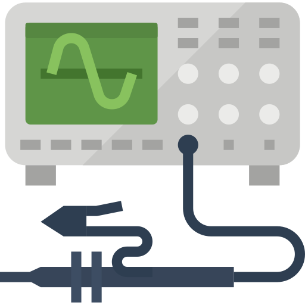
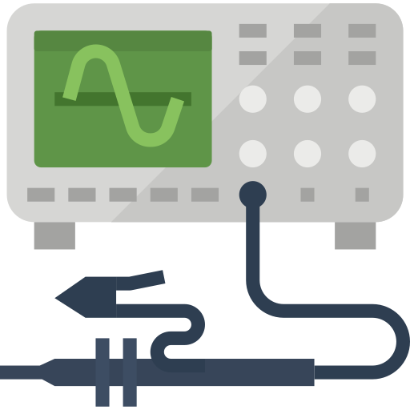

Electronics Engineering Student currently seeking internship opportunities in the fields of embedded systems and hardware design.
With a strong background in electronics and computer engineering, I am eager to apply my skills and knowledge to real-world challenges.
Passionate about microcontroller programming, PCB design, and the development of efficient and reliable hardware solutions, and am committed to contributing to innovative projects in these areas.


 
